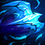
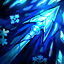

Home Game Info Champions Forums
INTRODUCING

With each arrow she fires from her ancient ice enchanted bow, Ashe proves she is a master archer. She chooses each target carefully, waits for the right moment, and then strikes with power and precision. It is with this same vision and focus that she pursues her goal of uniting the tribes of the Freljord and forging them into a mighty nation.
ABILITIES
-
 Q: Ashe's Q is Frost Shot. This slows the enemy by 35% at level 18 and scales on physical damage.
Q: Ashe's Q is Frost Shot. This slows the enemy by 35% at level 18 and scales on physical damage.  W: Volley. Ashe fires out 3 arrows infront of her. The slow from Frost Shot applies to Volley.
W: Volley. Ashe fires out 3 arrows infront of her. The slow from Frost Shot applies to Volley.- E: Hawkshot. Grants vision and has a long range. Passive grants Ashe more gold upon killing a minion.
- R: Enchanted Crystal Arrow. Ashe fires an enchanted arrow that has global range. Scales on magic damage.
SKINS
Freljord Ashe
Sherwood Ashe
Woad Ashe
Amethyst Ashe
LORE
One tribe, one people, one Freljord.- Ashe
- Friends
- Tryndamere
- Nunu
- Avinia
- Sejuani
With each arrow she fires from her ancient ice-enchanted bow, Ashe proves she is a master archer. She chooses each target carefully, waits for the right moment, and then strikes with power and precision. It is with this same vision and focus that she pursues her goal of uniting the tribes of the Freljord and forging them into a mighty nation.
When Ashe was only fifteen, her mother was killed while commanding the tribe on a brash raid. Suddenly thrust into the role of leader, Ashe made the difficult decision to follow her childhood vision instead of seeking the revenge she craved. She spoke passionately against her tribe's demand for retribution, declaring the time had come to put blood feuds aside and broker a lasting peace. Some of her warriors questioned her fitness to rule and soon hatched a treasonous plot to kill the young leader.
The assassins burst into the clearing. Ashe lifted the runestone from the cairn to defend herself, revealing something hidden underneath: an ornate bow carved from ice. She grasped it, crying out in pain as frost formed on her fingers, and tore the bow from its resting place. Cold flowed from the enchanted weapon into Ashe, awakening a tremendous power that had always lived within her.